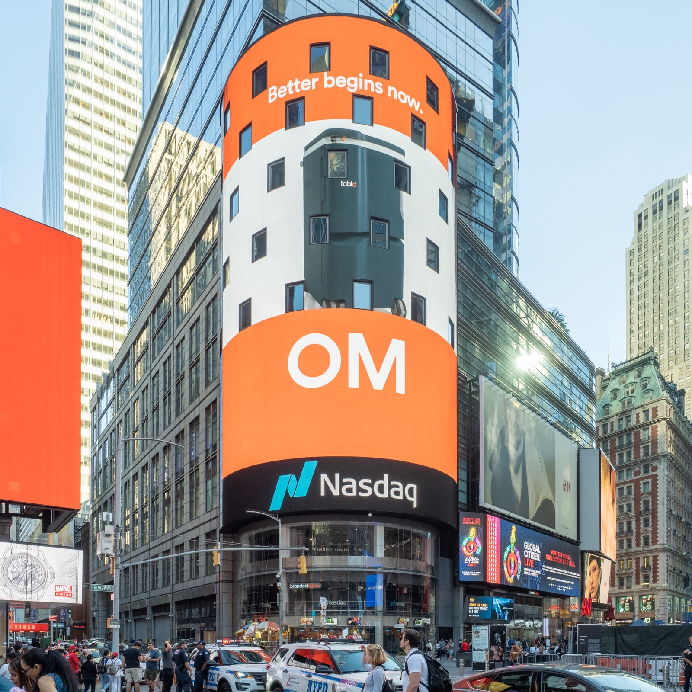

Executive Summary
Anthropic has filed to go public on Nasdaq. The S-1 it submitted to the Securities and Exchange Commission on October 26 carries the ticker ANT, and it puts revenue for the first half of this year at $16.286 billion, fourteen times the figure for the first half of last year. That document records a net loss of $80.7 billion for the half. The number is large enough that most headlines picked it up.
The operating loss line in that same document reads $693 million. The largest item filling the space between the two is $72.388 billion of non-cash cost, booked as the fair value of convertible notes and SAFEs rose. It is a cost that grows with the company's valuation, so the more investors are willing to pay for Anthropic, the larger the net loss on the books.
Sections 1 through 5 follow what can be checked in the S-1's summary income statement and risk factor language, and in reporting that carried it. Two things are this article's own reading: the view in section 6 that where a loss gets booked is the metric-definition problem data people already know, and the close of section 5, which sets the blank offering price beside the fair use risk factor as two blanks of different kinds.
Key Figures
Four numbers out of the half-year accounts. The first card holds the amount that separates the headline from the record of the business.
Source: Anthropic S-1 · TechCrunch · Yahoo Finance live blog (all on the S-1 filed 2026-10-26)
$72.388B
Loss with no cash behind it
Cost booked as the fair value of convertible notes and SAFEs rose
$693M
Operating loss for the first half
Down from $2.1 billion in the first half of last year
$974M
Second-quarter operating income
The first time a quarter has closed in the black on operations
80%
Share of revenue charged by usage
About $13 billion of the $16.286 billion taken in over the half
The Same Six Months, Two Loss Numbers
An S-1 is the registration statement a company files with the Securities and Exchange Commission when it means to go public. It is where revenue and costs, governance and risk factors are set down in one place before an investor asks. The document Anthropic filed on October 26 names Nasdaq and the ticker ANT, and it carries the numbers for January through June of this year.

Revenue was $16.286 billion. The same six months last year brought $1.163 billion, so the figure grew fourteenfold. Set beside the $4.6 billion the company took in across the whole of last year, half a year sold more than three times what all of last year did.
Coverage split on the loss. Some stories put the $80.7 billion net loss in the headline, and others led with the $693 million operating loss. Both came out of the same document and neither one is wrong. What differs is what each number counts. Operating loss is revenue less the costs of running the business, people and compute among them. Net loss is the last line of all, with everything that happened outside operations added in.
That the two sit more than a hundred times apart means the items outside the business weighed far more in this half year's accounts than the ones inside it. What those items are is in the next section.
Most of the Gap Never Left the Bank
The largest item sitting between the operating loss and the net loss is a $72.388 billion change in fair value. The S-1 attributes it mainly to a rise in the fair value of the outstanding convertible promissory notes, and traces that rise to the increase in the company's enterprise valuation.
A convertible note or a SAFE is a contract in which an investor puts money in first and takes a right to convert into shares later. Accounting treats that right as a liability and prices it again at each period end. When the company is worth more, the shares owed later are worth more, and the obligation counts as having grown. The increase goes down as a cost. So the more investors are willing to pay for the company, the larger the net loss on the books. No cash left the account.
The half-year net loss is $80.748 billion exactly. Strip that one item out and the loss falls to $8.360 billion. A different story from $80.7 billion, and not a light sum either. The $7.667 billion that remains between $8.360 billion and the $693 million operating loss did not come from the business either. The S-1's summary income statement writes that space on three lines: other non-operating expense of $8.757 billion net, interest income of $1.111 billion, and income taxes of $21 million. Subtract the interest income from the two cost lines and $7.667 billion comes out as it stands. What sits inside the $8.757 billion takes the notes to find out, and in the first half of last year that line was zero. That remainder is the box at the far right of the diagram below.
Annual net losses moved with this one item too. $1.5 billion in 2023, $8.3 billion in 2024, $42.0 billion in 2025, and $80.7 billion in half of this year. The change in fair value in those same years was $1.0 billion, $5.4 billion and $34.3 billion. In the years the net loss grew, this one line grew with it, and in the first half of this year it accounts for 90% of the net loss. How fast the valuation climbs sets much of how large this cost gets. Worth holding alongside: once the notes convert into shares at listing, the cost item itself goes away or shrinks sharply.
Quarter by Quarter, Q2 Turns an Operating Profit
Cut the half in two and you can see how the $693 million operating loss was made. First-quarter revenue was $4.7 billion against an operating loss of about $1.7 billion. Second-quarter revenue jumped to $11.6 billion and brought operating income of $974 million. It is the first quarter in the black on operations.
Compute costs over the same stretch went from $3.4 billion to $5.6 billion. Costs rose by $2.2 billion while revenue rose by $6.9 billion, and the red turned black. Last year's full-year operating loss was $8.060 billion against $693 million for this half, so on the operating numbers alone the direction has turned.
Measured half against half the swing is clearer. Compute and infrastructure took about $2.33 billion in the first half of last year and about $9.0 billion in the first half of this one. Revenue grew fourteenfold while this cost grew nearly fourfold. That distance is the background to an operating loss that fell from $2.135 billion a year ago to $693 million.
| Period | Revenue | Operating income (loss) | Compute cost |
|---|---|---|---|
| Q1 2026 | $4.7 billion | about -$1.7 billion | $3.4 billion |
| Q2 2026 | $11.6 billion | +$974 million | $5.6 billion |
| First half 2026 | $16.286 billion | -$693 million | about $9.0 billion |
The quarterly figures are rounded, so adding the two quarters will not land exactly on the half-year total below the decimal point. It does not get in the way of reading the direction.
Before reading one profitable quarter as a trend, there is a number to put beside it. By Yahoo Finance's account, compute commitments with four suppliers run to $430 billion, and most of that cannot be canceled absent a material breach on the supplier's side. Broadcom is listed at about $161 billion, Google at about $115 billion, Amazon at about $110 billion and Microsoft at about $45 billion. The costs that have reached the income statement so far are the front end of those commitments.
That total also moves with how it is counted. The commitments note in the S-1 takes June 30 as its date and counts only the portions fixed in amount and term, which gives $265.6 billion. Contracts that charge for capacity as it is used are written up as not yet determinable in amount, and they sit outside that total. That is why $430 billion and $265.6 billion are both in circulation for the same company's compute commitments.
Which Months Does 'One in Four' Cover?
The S-1 also says what kind of revenue this is. Of the first half's revenue, 80%, about $13 billion, is charged by usage, and the remaining 20% comes from subscriptions. Usage-based revenue grows as customers run the models more, and it falls from the following month on when a customer switches to another model.
On customer concentration, two numbers are in circulation. One says the top five customers account for about a quarter of revenue, the other that two customers account for about 20%. They are not rival figures but figures counted over different months. The first covers the nine months from January through September, and the second covers the six months of the first half, which is what this article has been reading. Put side by side without their periods named, neither one holds.
| Period counted | What is counted | Share of revenue |
|---|---|---|
| January to June 2026 | The two largest customers | about 20% |
| January to September 2026 | The top five customers | about 25% |
| Q1 to Q3 2026 | The top five customers | about 36% to about 21% |
The third row says which way it is going. The share leaning on the top five has been falling across the quarters, and revenue from everyone else has grown by that much. As of the end of September, more than 11,900 customers spend over $100,000 a year, 1,900 spend over $1 million, and about 250 spend over $10 million.
Concentration is not only on the customer side. Revenue arriving through cloud providers' marketplaces went from 11% in 2023 to 32% in 2024, 47% in 2025 and 48% in the first half of this year. While the customer base spread out, the distribution channel narrowed. This blog covered the mirror image once. Lambda, the AI cloud provider, had most of its booked backlog with Anthropic alone.
Two Boxes Still Blank, for Different Reasons
One set of boxes in this document is still unfilled. The offering price, the number of shares to be issued and the amount to be raised are all blank. The filing goes in before the price is set, and the numbers go into an amended registration statement once demand has been read.

The governance side carries an unusual number instead. A single newly created Class F share holds 50.1% of the voting power. A limited liability company owned jointly by the seven co-founders holds that one share, and the share carries no economic rights such as dividends or a claim on residual assets. The Class A shares sold in the offering cannot exceed 49.9% of the vote in total. Who puts the money in and who makes the decisions are separated by design.
There is also a box where what is missing is a right rather than an amount. In the risk factors the company writes that it believes in good faith it has sufficient rights and defenses for the data used to train its models, and that the belief rests on a judgment that the use qualifies as fair use under copyright law. It writes alongside that a court deciding otherwise could harm the business. That many jurisdictions outside the United States hold no fair use defense at all sits in the same section.
The offering price box is only undecided, and it will be filled soon. The fair use box is one the company could not fill even if it wanted to, not until a court settles the question. The first blank closes with time; the second closes only once something outside the company is settled. The kind of uncertainty an investor takes on differs with that.
Why Pebblous Is Watching These Numbers
The listing calendar is not Pebblous's to follow. What makes this document worth opening is the way the numbers split. $80.7 billion and $693 million came from one source, and neither side miscalculated. The definitions differ over which costs get counted as loss. Anyone who has worked on data quality will recognize the situation. A meeting where two teams arrive at the same table with different numbers is usually called not because the data is wrong but because the aggregation rules differ.
The 'one in four' in section 4 runs the same way. The moment the conditions fall off, six months or nine, two customers or five, the ratio becomes a sentence nobody can check. That companies count revenue in different ways was covered once in a comparison of how OpenAI and Anthropic define revenue. This time it happened inside one company, inside one document.
If your organization sends its metrics outside, three things are worth checking.
- Does every figure carry its period and its denominator right next to the number. A figure whose aggregation conditions have fallen off means something slightly different with each citation
- When more than one metric measures the same thing, is it written down which one serves as the headline figure. Where it is not written down, whichever one suits at the time gets picked
- If an asset leans on a right or an approval that is not yet settled, does that uncertainty surface anywhere in the metrics. Anthropic put it in the risk factors rather than the financial statements
That last item is the question this document leaves behind. The right to use training data is a condition holding up the company's core asset, and its value appears in no box on the financial statements. How to read a metric that stands on a condition no number can state is not a problem only for AI companies preparing to list.
Thank you for reading this far. The loss figures and the risk factor language in this article were checked in the October 26 S-1, and the quarterly results and the per-supplier commitment amounts were checked in the TechCrunch and Yahoo Finance reports that carried the filing. If you have lived through counting one thing with two metrics where you work, we would be glad to hear about it.
Pebblous Data Communication Team
October 27, 2026
References
- 1.Anthropic PBC. (2026). "Form S-1 Registration Statement." U.S. Securities and Exchange Commission, 2026-10-26.
- 2.TechCrunch. (2026). "Anthropic officially files for its public debut." 2026-10-26.
- 3.Yahoo Finance. (2026). "Anthropic IPO live updates: Frontier AI lab discloses revenue and risks in highly anticipated S-1 filing." 2026-10-26.